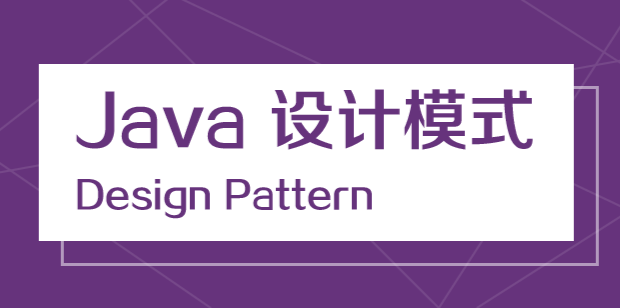
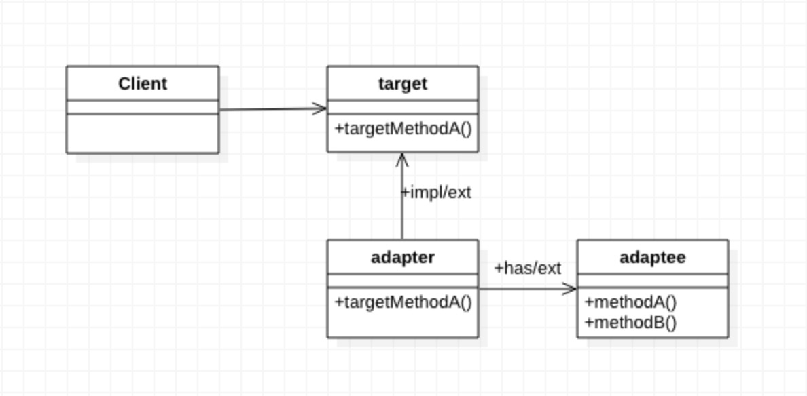

适配器，兼容两个不能工作的接口或者类。
介绍
适配器，在日常开发中还是挺常用的。现在的编程都是面上接口编程，所以，在拓展的时候，一个接口调用另外一个接口的时候，可能就会存在不匹配的时候，那就可以使用适配模式，增加一层适配器，去适配两个接口，这样两个就接口就能正常调用了。
适配器模式有三种：类适配器、对象适配器、接口适配器
应用场景
主要是应用两个接口不兼容，在两个接口之间做一层适配，让两个接口能够正常工作。
UML

方法说明
- client：客户端，调用者。
- target：目标接口。
- adapter：适配器，适配，target中的方法，和adaptee中的方法。
- adaptee：被适配的类或对象或接口。
使用
- 类适配器：adapter 继承 adaptee 中的方法和 实现 target 中的目标方式，实现的方法中调用adaptee中的方法，从而达到适配的效果。
- 对象适配器：通过 构造器 持有 adaptee 的对象实实例，在实现 target 方法中调用实例的方法，实现适配的效果。
- 接口适配器：通过 抽象类 对 adaptee 默认空实现，在 继承 abstarctAdapter，在实现 target 中要用到的方法，而不是实现全部的方法，从而达到适配，是组件之间解耦。
注：接口适配器，并不常用，因为正常接口定义应该符合单一职责原则，并且通过组合的方式，实现不同的功能。所以接口这种用的较少。个人理解，比较鸡肋，但是看到别人有做，就也写上了。主要是类的适配和对象的适配。
优缺点
保证了client不需要做任何修改，被适配的接口，需要不要修改，保证了开闭原则，并且对源码没有入侵。很好的解耦。
拓展性
良好
个人
question：前一阵，在开发中就发现，一个方法要调用另外的一个方法的时候，需要异步调用，可以直接在那个被调用的方法上直接用@Async就能搞定，但是有一个问题，所做的业务同样的方法需要同步调用，和异步调用，直接调用的话，就不能用@Async标注的方法，用原有的方式就需要写两套代码，一套同步，一套异步。
solution：我就在单独抽象了一个方法，加上@Async注解，通过反射的方式调用。很好的实现了解耦。
同步调用：直接调用被调用方法即可。
异步调用：将要调用目标方法的 类名 ， 方法名 ，参数 传入，通过spring的反射调用被调用方法。
源码地址：
https://github.com/wangypeng/java-design-mode-source/tree/master/adapter